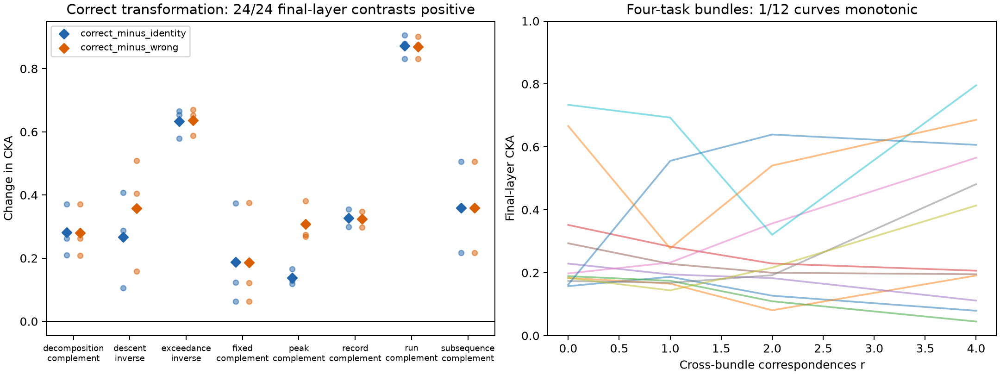

原 PermWorld 最终层：正确变换相对未变换输入、相对错误变换，均为 24/24 个关系×种子单元增加 CKA。平均增幅分别为 0.3832 和 0.4152。种子先在关系内平均后，两种对照仍都为 8/8 条关系增加。
这个对照保持网络权重不变，改变评估输入之间的数学对齐方式。四任务组合实验改变的是训练任务集合：r=4 相对 r=0 只有 7/12 个单元增加，只有 1/12 条曲线单调。
有限域后续试验的负迁移与这里的变换特异 CKA 增加不矛盾；该后续试验也不是原 Transformer 变换对照的复现。CKA 增加本身不能推出少样本迁移收益。

“每个都增加”在这里准确指最终层的正确变换对照；不同层结果见 层级统计。原始逐单元差值见 symmetry_contrasts.csv。